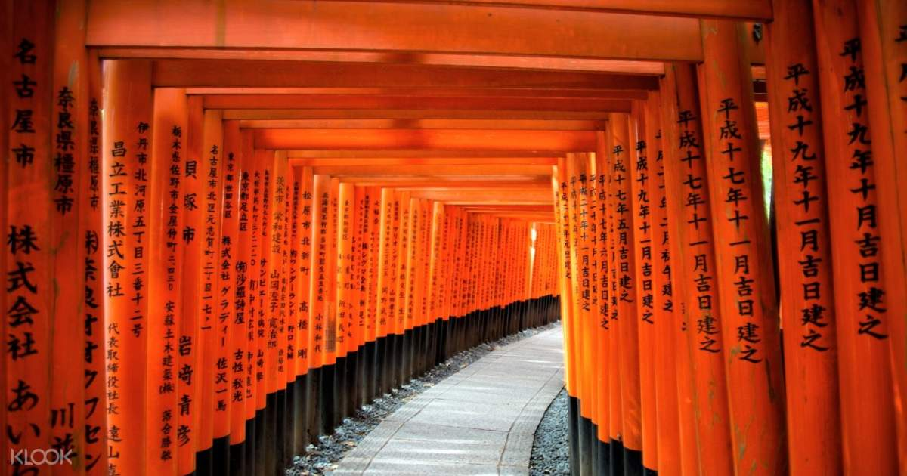
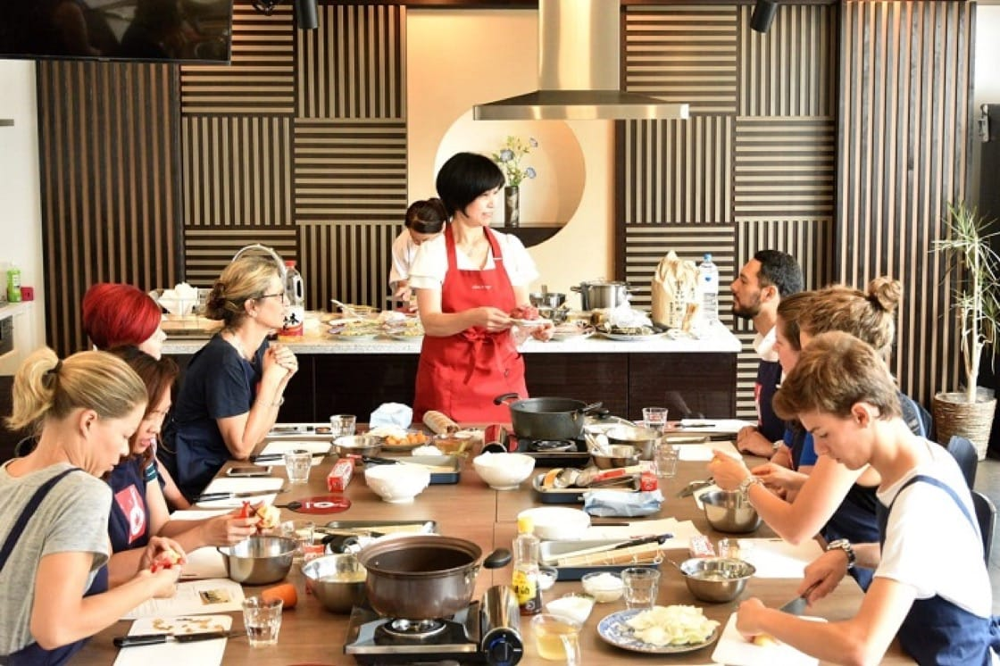
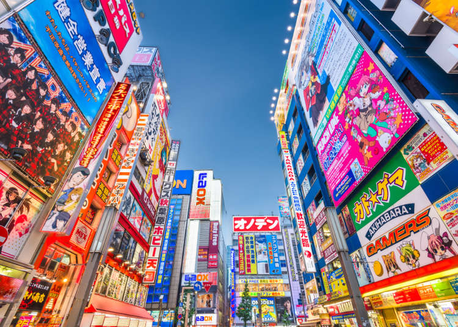
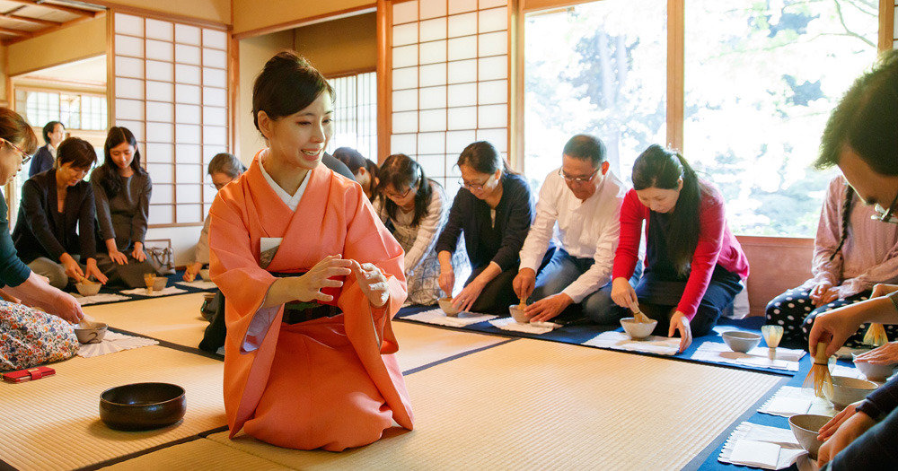
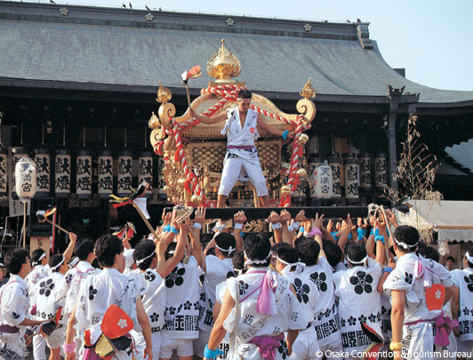

Feel like being absolutely mesmerized? The Fushimi Inari Shrine is worth a visit, showcasing famous art history in southern Kyoto. The shrine is a well-known for its vermilion torii gates, creating an attractive site to see. However, make sure to set a large portion of time for the Shrine as this is an experience worth not missing, being a well-known sight in Kyoto. This unique shrine rests on Inariyama, which is the mountain that is considered to be a precinct of the shrine. This is incomparable to the large numbers of shrines in Japan, as the building contains five different shrines. Each shrine has a symbolic meaning to the virtues of Inari Okami that make this establishment a popular gathering site. Down below, here are some facts about the Fushimi Inari Shrine hike. The hike does have stair climbing involved; however, it is not a strenuous climb. Make this hike and be granted with a break taking view at the top!
Overall Duration: 3 hours
Difficulty: Moderation
Distance: Approximately 3 miles
Start/Finish: Fushimi-Inari Station

Would you consider yourself a foodie? Do you feel like putting your cooking skills to the absolute test? Sign up for a Japanese cooking class to enhance your knowledge on the local cuisine. Learn about the essentials to Japanese dishes while creating samplings that will take your taste buds for a ride. Some of these dishes include Ramen, Sushi, Tempura and more! There are additional cooking classes for the individuals who are both vegetarian and vegan as well. From prices that range from $50-$100, these cooking class range from 90 minutes to as long as 3 hours. Experience this hands on, ultimate food making experience with a free cancellation at any time! Down below, you can find some of the cooking classes that will be offered with a rating of 5 stars!

Interested in electronic shopping? Around central Tokyo? Visit Akihabara to view otaku goods and the fan culture within Tokyo such as anime. Being recognized as a significant complex to global electronics, visiting Akihabara is worth the visit! Some of the Otaku attractions include Maid Cafes, Don Quijote, Radio Kaikan, Super Potato, and Mandarake. These stores sell a wide range of anime related goods while additionally selling items such as posters and figurines. Be sure to take a visit to these stores as there are rare collectibles that can be found at various stores. Down below, you can find some of the major electronic stores with operating times at this district for electronic goods.

Do you have an interest in Japan’s culture? Attend a tea ceremony to witness a significant ritual in Japanese tradition. Serving Japanese green tea, you will learn the importance of purity, harmony, and mutual tolerance. Although these tea ceremonies can be found in various places around Japan, the most notables destinations to witness the culture is in Uji and Kyoto. Tea was introduced from China back in the 8th century, gaining popularity throughout the social classes as years have went by. As a way to express knowledge, tea drinking parties came into effect where individuals would show off to one another of their unique bowls, emphasizing the spirituality that comes with green tea. Unsure of what to wear? People are expected to wear modest clothes, lacking any perfumes or jewelry. Experience the rare sighting of these rituals while enjoying the gracious, and valuable green tea! Down below, you can find some tea ceremonies that are being held soon.

Visiting Japan for the first time? Japan holds nearly 200,000 festivals on a yearly basis, showcasing their various ways of celebration. Be prepared for acts of dancing, and chanting, creating an environment that is extremely high energy! Some of these festivals include: Kyoto’s Gion Matsuri, Aomori’s Nebuta Matsuri, and Osaka’s Tenjin Matsuri. Down below you can find some of the festivals that will be held in the start of the new year!